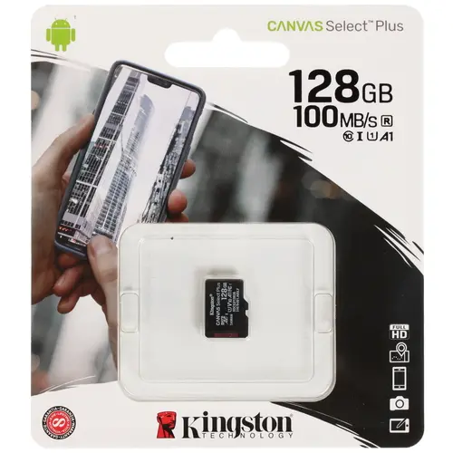
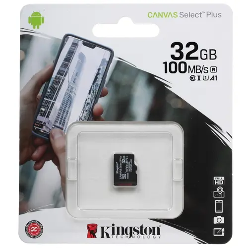
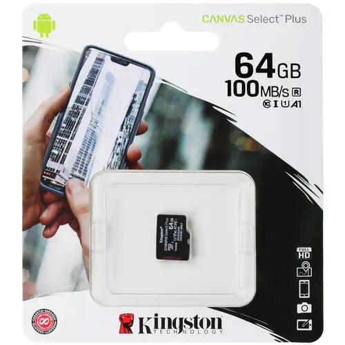
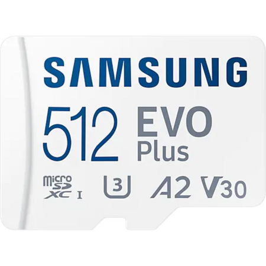

Самые популярные карты памяти
Kingston Canvas Select Plus microSDXC 128 GB
Карта памяти Kingston Canvas Select Plus − миниатюрная карта, обладающая производительностью класса A1, что делает ее идеальным приспособлением для использования в компьютерных устройствах, видео- и фотоаппаратуре. Объем карты microSDHC достигает 128 ГБ, что позволит записывать на нее достаточно много цифровой информации. Модель поддерживает совместимость с устройствами, функционирующими на Android.
Kingston Canvas Select Plus поддерживает скорость чтения 100 Мбайт/сек, что обеспечивает более скоростную загрузку приложений. Модель отличается высокой прочностью, скоростью и производительностью, что позволяет использовать ее для обработки фотографий, имеющих высокое разрешение, а также для редактирования и съемки видео в Full HD. Изделие соответствует скоростному классу Class 10, UHS-I (U1) и поддерживает систему хранения файлов exFAT, благодаря чему достигается надежное хранение цифровой информации. Рабочая температура карты колеблется от -20° до +85°.
1799₽
КупитьKingston Canvas Select Plus microSDHC 32 GB
Карта памяти Kingston Canvas Select Plus оптимизирована для работы с устройствами, работающими на Android. Благодаря соответствию скоростному классу Class 10, UHS-I (U1) карту можно использовать в фото- и видеокамерах, снимающих в формате Full HD. Модель обладает высокой производительностью, что наряду со скоростью чтения 100 Мбайт/сек позволяет сделать ускоренной загрузку приложений: вы можете смотреть видео, не копируя данные на компьютерное устройство, редактировать изображения в максимально высоком разрешении.
Kingston Canvas Select Plus поддерживает файловую систему FAT32, что обусловливает надежное сохранение записанной на карте цифровой информации. Карта microSDHC обладает объемом 32 ГБ, поэтому годится для хранения фотографий и видео − файлов, которые вам дороги: карта надежно все сохранит, ведь она прошла испытания надежности. Карту памяти можно использовать при температуре от -20° до +85°. Температурные ограничения позволяют использовать карту памяти в большинстве погодных условий.
850₽
КупитьSamsung EVO Plus microSDXC 128 GB

Если вы ищите надежный накопитель данных для вашего смартфона или планшета, с которым гарантируется высокая степень быстродействия, то карта памяти Samsung EVO Plus станет для вас идеальным вариантом. Модель представлена в широко востребованном формате microSDXC, позволяющим использовать ее со многими представителями мобильной техники, присутствующей на рынке. Внушительный объем накопителя, достигающий 128 ГБ, обеспечит возможность хранения на нем огромного количества аудиофайлов, видеороликов и приложений различных форматов.
Карта памяти Samsung EVO Plus демонстрирует высокий показатель скорости чтения данных, достигающий 130 Мбайт/сек, что гарантирует быстродействие при работе с различными файлами данных. Высокая степень защиты от внешнего воздействия свидетельствует о надежности накопителя, благодаря чему он подходит для использования в профессиональной фото- и видеосъемке. Наличие адаптера в комплекте поставки расширяет совместимость карты памяти возможностью ее использования в ПК или ноутбуке.
1999₽
КупитьKingston Canvas Select Plus microSDXC 64 GB
Карта памяти Kingston Canvas Select Plus представляет собой высокопроизводительное приспособление, совместимое с устройствами, работающими на Android. Особенность карты в том, что она обладает высокой емкостью и скоростью, отличаясь поддержкой ускоренной загрузки приложений. Это позволяет считывать данные, не копируя их на компьютерное устройство. Играйте, наслаждайтесь игрой и не тратьте время на копирование! Карта microSDXC обладает встроенной памятью 64 ГБ, поэтому в вашем распоряжении будет достаточно места, чтобы поместилось все, что вы хотите.
Kingston Canvas Select Plus − это идеальный выбор для хранения видео и фото. Карта позволяет выполнять надежно любые задачи, будь то обработка фотографий в максимально высоком разрешении или редактирование и съемка видео в Full HD. Модель поддерживает файловую систему exFAT и обладает скоростью записи 100 Мбайт/сек. Это наряду с соответствием скоростному классу Class 10, UHS-I (U1) способствует комфортной работе с картой. Такие параметры карты позволяют использовать ее в видео- и фотокамерах.
1999₽
КупитьSamsung EVO Plus microSDXC 512 GB
Карта памяти Samsung EVO Plus microSDXC объемом 512 ГБ обеспечивает надежное хранение довольно большого количества различного контента – фотографии, видео и прочие файлы. Миниатюрное запоминающее устройство отличается высокими показателями производительности благодаря скорости в пределах 130 Мбайт/сек в режиме чтения и записи. Одним из преимуществ Samsung EVO Plus является защищенная конструкция, что гарантирует устойчивость к различным воздействиям внешней среды и бесперебойную работу на протяжении длительной эксплуатации.
За счет большого объема позволяет сохранить большое количество данных.
6499₽
КупитьSmartbuy microSDXC 128 GB
Карта памяти Smartbuy microSDXC 128 ГБ [SB128GBSDCL10-00] – изящный миниатюрный аксессуар, вмещающий большое количество всевозможных файлов. С его использованием можно увеличить возможности и производительность смартфона или планшета. За счет скорости чтения 40 Мбайт/с модель относится к классу UHS-I (U1). Еще одно достоинство карты памяти Smartbuy microSDXC 128 ГБ [SB128GBSDCL10-00] – поддержка стандарта Plug&Play, что избавляет от необходимости использовать программное обеспечению.
Накопитель можно вставить в специальный разъем и сразу приступить к его использованию.
Менее популярный бренд, но дешевле аналогово с таким же объемом, что делает его довольно привлекательным при покупке. Скорость передачи данных чуть ниже аналогов, но в случае использования для действий, не требующих большой скорости отличный вариант. Идеально подойдет для старых компьютеров, чья скорость чтения невелика.
1199₽
КупитьSamsung EVO Plus microSDXC 256 GB

Карты памяти Samsung – это одни из самых надежных и популярных моделей на рынке. Они обеспечивают высокую скорость записи и чтения данных, а также защиту от воды, пыли и магнитных полей. Кроме того, они имеют гарантию от производителя и поддерживаются многими устройствами.
Если вы ищете карту памяти с большим объемом и отличными характеристиками, то вам нужна карта памяти Samsung 256. Она обеспечивает высокую скорость записи и чтения данных, а также защиту от воды, пыли и магнитных полей. Кроме того, она имеет гарантию от производителя и поддерживается многими устройствами.
ВАЖНО - Скорость передачи данных Чтение: до 130 МБ/c. Запись: меньше, чем скорость чтения.
3599₽
Купить